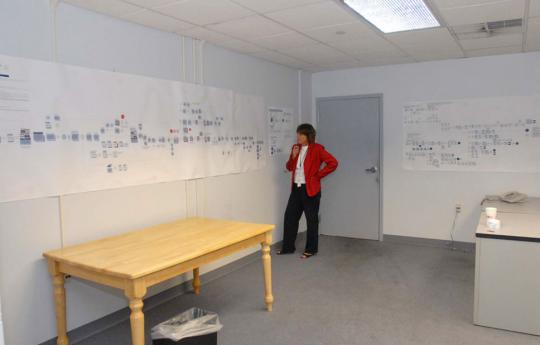

The Prometheus Priorities
Over the course of several weeks, Myers and Gleason identified four broad areas to tackle. These were technology, training, staff reassignments, and physical environment. Each had its own subset of challenges.
- Technology. The process map had abundantly confirmed that the CMS needed replacement. The pagination system would also have to be updated so that Mac and PC computers, old and new, could exchange information. Gleason and Spain also began to think about what equipment—personal digital assistants, digital cameras, video recorders, laptops, camera-adapted cell phones—the paper should buy to accommodate new ways of gathering and sharing information.
Smith and Gleason discussed purchasing options: buy now, or wait even longer? Smith had been burned once already by too-hasty purchases. “When we first bought digital cameras they were $17,000 each, and now they’re worthless, those old cameras,” Smith says. “From that point of view it makes sense to not necessarily be the early adopter of some of this technology, to wait a little bit and see what happens.”
- Training. Reporters in the Times Union’s envisioned 24/7 newsroom might be asked to provide photographs or video as part of their reporting. Similarly, photographers might be asked to do light reporting. Training was necessary, but it wasn’t clear how many people should be trained, to what extent, or at what cost. Smith actually interviewed and considered hiring a training consultant, who proposed an in-depth, four-day, off-site training for 20 reporters to learn video shooting, editing, and website design. But Smith worried about the high cost of the course and taking so many people out of the newsroom for that length of time. “I don’t know that diverting my star investigative reporter was quite the right approach,” Smith says.
Also on the team’s mind was how the anticipated job changes would affect the Times Union’s 70-year relationship with its labor union. The Albany Newspaper Guild represented over 300 Times Union employees and had traditionally been a cooperative partner in labor negotiations. But with jobs and roles poised to change dramatically, Smith was uncertain how the Guild would react.
- Staff reassignments. In addition to technical training, newsroom staff would have to be retrained for new roles and responsibilities. For example, copy editors might be expected to oversee postings to the Web. Photo editors might incorporate video and write short copy about images. To succeed, the Times Union newsroom leaders would need to enlist staff support. “We were building this cultural transformation, changing the newsroom,” Smith says. “People needed to understand that we are not just a newspaper anymore, and that was going to take some time.”
- Physical environment. The newsroom would have to change physically to be more conducive to team collaboration. Smith and Gleason wondered how to integrate the online group, clustered in one part of the room, more fully with the rest of the newsroom to help rapidly transfer words, graphics, and photos to the Web. The executive team also considered how to move artists and photographers from other areas of the building closer to the newsroom. Finally, even the furniture hampered the flexibility the newsroom needed. Some desks were bolted to the floor. Modular furniture and movable partitions would allow for easy redesign if, for example, the newspaper wanted in the future to create a new department.
After Myers and Gleason identified the broad categories ripe for change, the next step was to develop a roadmap to execute the plan. Myers’ maps were posted in an empty conference space that would serve as the “war room” for the project, enabling the team to test CMS products on computers set up in the room and, as Gleason jokes, “throw paper at the walls and scream.” The effort needed a name, so Gleason and her group brainstormed ideas, looking for a moniker that represented “a repositioning of the challenges ahead, preparation for the future, ready for the new world.” Some suggestions: News Now!, Your Next Times Union, R/Evolution, Go Digital, and dozens more. In the end, the team decided to name the project Prometheus. According to Greek mythology, Prometheus was a visionary concerned about the future. Gleason decided to keep the name under wraps until it could be announced at a newsroom kickoff event.
Listen to Gleason discuss introducing the plan to staff members.
Mission and charter. Gleason developed a mission statement for Prometheus: “To transform the Times Union newsroom into a nimble, efficient and responsive operation that embraces and employs multimedia newsgathering techniques in order to meet the demand for customized news and information 24 hours a day, seven days a week, on multiple platforms.” The team also created a charter to describe the broad scope of the project, lay out goals and objectives, assess risks, and begin to determine requirements. The charter put everyone on the same page in terms of expectations. “The charter was a covenant or an agreement in concept,” Gleason says. “The reason this is so important is that you never want to be in the middle of the project and go, wait a minute, ‘We never said we were going to do that, don’t you think the project should be looking at X?’”
At times, Gleason felt overwhelmed. “I sat through all these meetings and realized that we were talking about not just a technology change but a profound change in the way we think,” Gleason says. “It did start to feel overwhelming.” Like Smith, Gleason felt that radical change was contrary to the industry’s conventional way of thinking. “Newspapers are a traditional industry that come with all the trappings of a big and lumbering giant that just doesn’t know how to turn itself quickly,” Gleason says. “Like somebody said to me, you need to learn how to be a speedboat and not a cruise liner.”
Part of the difficulty was that the team had to find time to plan and execute Prometheus while still putting out a paper every day. Smith recalls: “The transition was time-consuming and expensive...There was a cost involved in taking Mary Fran [Gleason] away from the daily product, and all these project leaders who were working with her had real day jobs... They were putting out the paper.”
Listen to Smith on cost.
Timing was also a subject of discussion. Gleason looked at the project as a three- to five-year undertaking, but Smith wondered if that was realistic, and offered instead a combination of short-term and stretch goals. “I just couldn’t quite imagine setting out on a three-year plan in a newsroom where we produced stuff for a daily paper,” he says. “It seemed to me that the most we could say was, ‘This is an 18-month transition period.’” In an update to the team, Gleason wrote that “if the program proceeds too slowly, we’ll lose competitive edge in the marketplace.” The choice between acting boldly and waiting to develop a more strategic approach weighed heavily on Smith. It was difficult to decide which category of change to tackle first.
By mid-2007, Smith, Aldam, and the team knew they had to start taking action, not just plan. Smith says he did not intend to be groundbreaking—“it’s smart to let somebody else make the mistakes”—but that time had run out and changes needed to be made. “It seemed to me that if we left the transition of our newsroom to the same time scale that our audience was migrating there, that we would lose that audience by not being there ahead of them,” Smith says. “We needed to embrace it right away.”
Listen to Smith on readers' preferences.
The team sat down with Myers’ findings, Gleason’s charter, and their own ideas for the next move. No newspaper had attempted to map and overhaul a newsroom in the way the Times Union was contemplating. The team would have to trust to its own best judgment to decide which area to address first, and how to present the proposed changes to the newspaper’s employees.